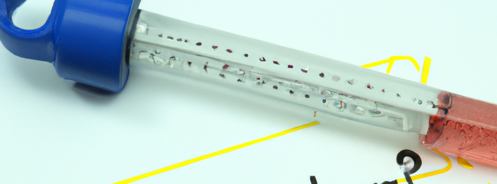
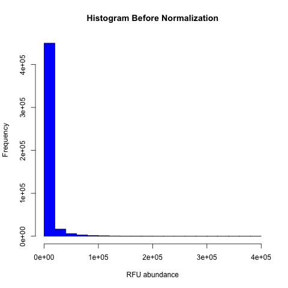
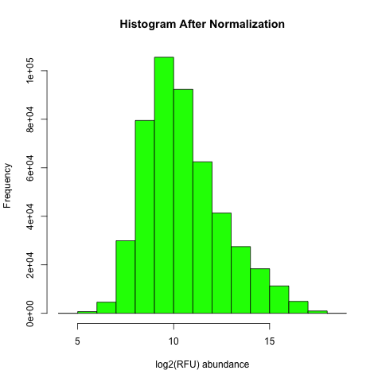
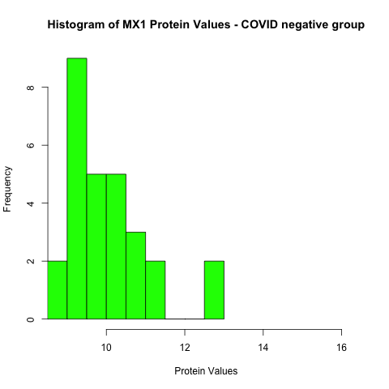
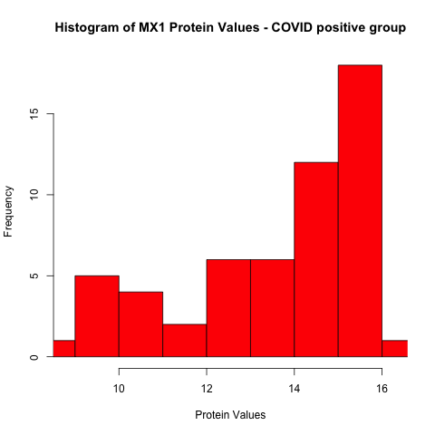

library(dplyr)
library(tidyr)
library(tibble)SomaScan - A Powerful Tool for Proteomics Analysis
The Power of Data to Understand Proteins

Exploring Health: How SomaScan Uncovers Secrets of Proteins
Imagine SomaScan as a super advanced tool that helps scientists understand how our bodies work at a tiny level. Inside our bodies, there are tiny molecules called proteins that do important jobs like keeping us healthy and making sure our bodies function properly. SomaScan, created by a company called SomaLogic, is like a super microscope for these proteins. It can look at thousands of them all at once and tell scientists how many of them are there. This is a significant advancement because in the past, scientists could only study a few proteins at a time.
SomaScan works a bit like a lock and key. It uses tiny pieces of DNA or RNA, which are like special keys that fit perfectly with specific proteins. When these keys find the right proteins, they stick to them, and that’s how SomaScan can measure what’s happening. This technology is incredibly useful. It can help researchers learn more about diseases, discover new medicines, and even figure out the best treatments for each person based on their unique proteins. SomaScan acts as an incredible tool that aids scientists in exploring the intricate world of proteins and their impact on our health.
Objective
In the realm of SomaScan data analysis, a common and pivotal question arises: Can we identify proteins that exhibit differential abundance between two distinct groups?
To fully appreciate the significance of this question, let’s first delve into the broader concept of molecular biomarkers. Molecular biomarkers are measurable indicators found within biological samples that offer valuable insights into an individual’s health status or the presence of a disease. These indicators span a spectrum of entities, including molecules like proteins, metabolites, cellular characteristics, and genetic variations. In modern medicine, biomarkers serve as essential tools, aiding in tasks such as diagnosing conditions, predicting disease outcomes, monitoring health trends, and assessing the efficacy of treatments.
COVIDome Project Dataset
There are three datasets in this entry: the COVIDOme Sample Metadata, the COVIDome SomaScan dataset, and the COVIDome MSD Cytokine Dataset. These datasets were generated by the COVIDome Project at the University of Colorado Anschutz Medical Campus. To learn more about the COVIDome Project please visit covidome.org. This project aims to accelerate translational research in the field of COVID19 by generating and broadly sharing multi-omics datasets of research participants with and without COVID19.
The Sample Metadata file describes sample ID, COVID19 status at the time of blood draw (positive or negative), sex and age. The SomaScan dataset is a plasma proteomics dataset obtained from research participants with and without COVID19 using the SomaScan® technology. The MSD cytokine dataset was generated using multiplex immunoassays with Meso Scale Discovery (MSD) technology.
Link to dataset here | Link to publication here | link to the interactive db here
Analysis
Linear regression serves as the most prevalent technique for pinpointing proteins that exhibit differential quantification between two distinct groups. Its popularity is attributed to its speed, high interpretability, and its capacity to accommodate the analysis’s need for accounting independent covariates such as sex and age.
In the following sections, I will present two distinct strategies for analysis: hypothesis testing and hypothesis generation.
In Example 1, a hypothesis-testing approach is demonstrated, aiming to validate the author’s assertion of the upregulation of the MX1 protein in COVID-19 patients.
In Example 2, a hypothesis-generation approach is showcased. Here, the objective is to uncover all proteins that showcase varying abundance levels between COVID-19 negative and COVID-19 positive groups.
load libraries
Load data
Load SomaScan dataset and metadata.
# load meta
metadata <- read.csv("../data/SomaScan/COVIDome_metadata.csv")
dim(metadata)[1] 105 5# load SomaScan
SomaScan <- read.csv("../data/SomaScan/COVIDome_dataset.csv")
dim(SomaScan)[1] 4843 103Data Transformation and Normalization
Metadata
Remove empty column ...5, remove samples with unknown real age (label under 20) and make Age column numeric.
# Select specific columns
metadata_clean <- metadata[, c("RecordID", "COVID_status", "Sex", "Age")]
# Filter out rows where Age is "under 20"
metadata_clean <- metadata_clean[metadata_clean$Age != "under 20", ]
# Convert Age to numeric
metadata_clean$Age <- as.numeric(metadata_clean$Age)SomaScan
Pivot samples columns into long format, with sample’s names under column SUBJID and measurements under column RFU.
SomaScan_pivot <- pivot_longer(
SomaScan,
cols = !c("AptName", "Analyte", "EntrezGeneSymbol", "UniProt"),
names_to = "SUBJID",
values_to = "RFU"
)Normalize data
The log2 transformation is a commonly used technique in data analysis, including proteomics, for several reasons. One key benefit is its ability to help approximate a Gaussian (normal) distribution for data that might be skewed or have a wide range of values. In many statistical analyses, assumptions of normality are important for accurate results. Applying the log2 transformation can make the data more symmetric and align it closer to a normal distribution, which is particularly useful for techniques that assume normally distributed data. Additionally, the log2 transformation helps in stabilizing the variability across data points, enhancing the reliability of subsequent statistical analyses.
SomaScan_norm <- SomaScan_pivot |>
mutate(
norm = log2(RFU)
)Show distribution before and after normalization.


Pivot features in long table format.
Create a new table where each rows correspond to SUBJID and our features / proteins are columns.
placeholder <- SomaScan_norm |>
dplyr::select(
SUBJID, AptName, norm
) |>
pivot_wider(
names_from = "AptName",
values_from = "norm"
)Combine SomaScan and metadata
working_table <- placeholder |>
dplyr::inner_join(
metadata_clean,
by = c("SUBJID" = "RecordID")
)Example 1 | Hypotesis Testing
In this example, the publication indicate the protein MX1 to be highly expressed in the COVID posive group. The linear model will use the protein MX1 as an exmple of the analysis.
data preparation
Select the column MX1.17460.51 which contains the normalize RFU values for the protein MX1, and rename it MX1. Also, the example_1 dataframe will include the independent variables COVID_status and covariates Sex and Age.
example_1 <- working_table |>
dplyr::select(
# select the dependent variable
# and rename it MX1 column
MX1 = MX1.17460.51,
# select indepedent variables
all_of(
c(
"COVID_status",
"Sex",
"Age"
)
)
)Use the R function stats::lm to create the linear regression model. This model will use the formula MX1 ~ COVID_status + Sex + Age, which predict the abundance of MX1 protein based on the COVID status (negative or positive) while adjusting for Sex and Age.
# Example linear regression
model <- lm(MX1 ~ COVID_status + Sex + Age, data = example_1)The anova() function in R is used to assess the statistical significance of individual predictor variables in a linear regression model, comparing models with and without specific variables to determine their contribution to explaining the variation in the dependent variable. The result of the anova test shows that the independent variable COVID_status has an effect in predicting the MX1 protein aboundance.
# show summary of the model
anova(model)Analysis of Variance Table
Response: MX1
Df Sum Sq Mean Sq F value Pr(>F)
COVID_status 1 227.884 227.884 67.2399 3.553e-12 ***
Sex 1 0.082 0.082 0.0243 0.8765
Age 1 0.500 0.500 0.1476 0.7018
Residuals 79 267.740 3.389
---
Signif. codes: 0 '***' 0.001 '**' 0.01 '*' 0.05 '.' 0.1 ' ' 1Generate the distribution of MX1 protein between the COVID negative and positive groups.
# Split the data by treatment groups
group1_values <- example_1$MX1[example_1$COVID_status == "Negative"]
group2_values <- example_1$MX1[example_1$COVID_status == "Positive"]
# Create separate histograms
png("img/ag001_img005.png")
hist(
group1_values,
main="Histogram of MX1 Protein Values - COVID negative group",
xlab="Protein Values",
col="green",
xlim=c(
min(example_1$MX1),
max(example_1$MX1)
)
)
invisible(dev.off())
png("img/ag001_img006.png")
hist(
group2_values,
main="Histogram of MX1 Protein Values - COVID positive group",
xlab="Protein Values",
col="red",
xlim=c(
min(example_1$MX1),
max(example_1$MX1))
)
invisible(dev.off())

Example 2 | Hypotesis Generation
In this case, a linear regression model is fitted for each protein.
# get the unique number of proteins
protein_models <- SomaScan_norm$AptName |> unique()
# calc statistics
covid_p_values <- sapply(protein_models, function(aptname) {
formula = paste0(aptname, " ~ COVID_status + Sex + Age")
model <- lm(as.formula(formula), data = working_table)
summary(model)$coefficients["COVID_statusPositive", "Pr(>|t|)"]
})Considering that we are running thousands of models, it is necessary to adjust the p-value for multiple tests. In this case, a common adjstment method is the Benjamini and Hochberg, which is commonly known as False Discovery Rate.
covid_fdr <- p.adjust(covid_p_values, method = "BH")Create a final dataframe containing pvalue and FDR for all models. The column candadite stored the statistical significan flag considering the common threshold of 0.05.
results_df <- tibble::tibble(
Protein = protein_models,
P_Value = covid_p_values,
FDR = covid_fdr,
candidate = ifelse(FDR < 0.05, TRUE, FALSE)
)The analysis identified a total of 465 proteins that are quantitatively different with statistical significance between COVID positive and COVID negative groups.
Conclusion
In conclusion, this post serves as a window into the world of protein biomarkers and a remarkable technology called SomaScan. By exploring the role of linear regression in analyzing SomaScan data, we’ve touched on two distinct strategies: hypothesis generation and testing. This glimpse offers an example of the work of data scientists, bioinformaticians, and computational biologists within pharmaceutical companies. The journey into the realm of proteins and data holds immense promise, contributing to advancements in healthcare and personalized treatments.